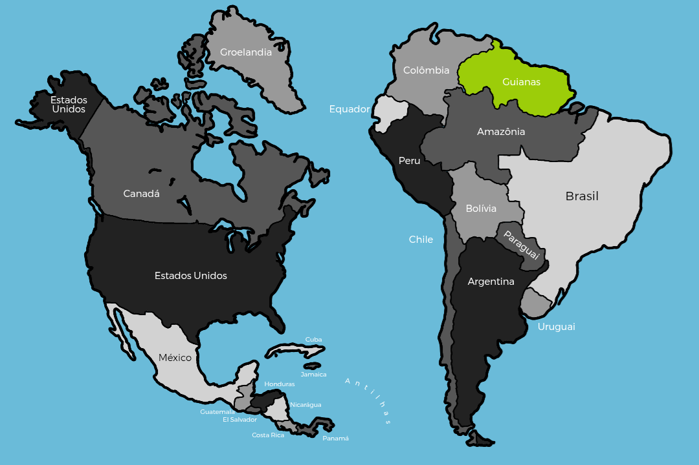

Américas
O período pós-Segunda Guerra foi marcado pela hegemonia dos EUA como superpotência. Na América do Sul, a Federação das Guianas (FG) liderou mudanças profundas após a Guerra Amazônica de 1937.
A ascensão do MPN nos anos 60 impulsionou a expansão, resultando na anexação de Trindade e Tobago (2021) e na criação do estado de Trombetas (2022). A Venezuela foi absorvida pela Colômbia e o Brasil recuou para o Centro-Sul após perdas territoriais.